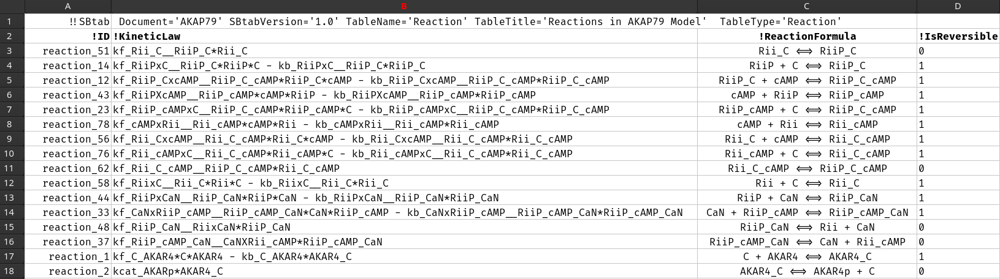

SBtab
SBtab.RmdThe R package uqsa, typically imports systems biology
models and corresponding data stored in SBtab files. SBtab is a table format
for system biology. The use of SBtab is optional, but very practical.
SBML models currently cannot be imported by this package, but can be
converted to SBtab using the online tools that sbtab.net provides. The content of SBML
files is more strict than with SBtab files, so the files created by
conversion are not guaranteed to work here. They are user-friendly,
i.e. a human can open SBtab files with a text editor and edit them
manually.
An SBtab Document is a set of tables that represent reactions, compounds, parameters, and measured data that correspond to simulations of the model under certain input conditions and initial values. Input conditions are often related to initial values and values of the input parameters (parameters that are used within the model of the input signal). The values of the input parameters are always known, while the model’ s internal parameters (e.g. reaction rate coefficients) can be subject to optimization or sampling.
For the most part, in our case, an SBtab document is a collection of tsv files (has to be one file per table). This can be written by hand, in a text editor (one that doesn’t auto convert tabs to N spaces). Each table contains information about the model, data, and their relationship to one another:
- Reactions
- Parameters
- Output Functions
- Compounds/Molecular Species
Each type of items (e.g. parameters) gets a TSV file
(e.g. Parameter.tsv), see our examples.
From these files you can automatically generate ODE code for R and C solvers, and load the data from them.
Advantages of SBtab
Data and models are tightly linked and we also include two tables on the relationships between the data and model simulations in all our examples:
- Experiments, a table with a list of experiments together with appropriate model settings
- Output, a list of output functions that correspond to measurable values for this model, named the same as the corresponding data columns
SBML level 2 lacks the ability to carry data with the model and also lacks the vocabulary to define which parameters are inputs and which are model internal. There is also no way to define an observable in SBML (a function that models the measurement device, an observation). For this reason, an SBML document cannot be converted into an SBtab document that has these qualities (which we need). But, we may be wrong about what SBML can and cannot do. Future versions of SBML may of course add new features. In general, SBML is hard.
SBtab File Structure
Each file has a header, with attributes key='value'
separated by spaces or tabs, e.g.:
This header doesn’t have columns, it’s a line of text, immediately followed by the actual table. In the sections below, we specify the header like above and then give an example table that can follow this header. You can also include other columns in any order; only some column names have special meanings, unknown columns will not be parsed (they are harmless).
We don’t parse the version attribute or any other attribute other
than TableName and Document.
f <- uqsa_example("AKAP79") # this is what the directory is called
sb <- SBtabVFGEN::sbtab_from_tsv(f)
#> [tsv] file[1] «AKAP79_Compound.tsv» belongs to Document «AKAP79»
#> I'll take this as the Model Name.
#> AKAP79_Compound.tsv AKAP79_Experiments.tsv AKAP79_Expression.tsv AKAP79_Input.tsv AKAP79_Output.tsv AKAP79_Parameter.tsv AKAP79_Reaction.tsv X0uM_cAMPCaN_AKAP79_0_nM_cAMP.tsv X0uM_cAMPCaN_only_0_nM_cAMP.tsv X0uM_cAMPno_CaN_0_nM_cAMP.tsv X1000nM_cAMPCaN_AKAP79_1_uM_cAMP.tsv X1000nM_cAMPCaN_only_1_uM_cAMP.tsv X1000nM_cAMPno_CaN_1_uM_cAMP.tsv X100nM_cAMPCaN_AKAP79_100_nM_cAMP.tsv X100nM_cAMPCaN_only_100_nM_cAMP.tsv X100nM_cAMPno_CaN_100_nM_cAMP.tsv X2000nM_cAMPCaN_AKAP79_2_uM_cAMP.tsv X2000nM_cAMPCaN_only_2_uM_cAMP.tsv X2000nM_cAMPno_CaN_2_uM_cAMP.tsv X200nM_cAMPCaN_AKAP79_200_nM_cAMP.tsv X200nM_cAMPCaN_only_200_nM_cAMP.tsv X200nM_cAMPno_CaN_200_nM_cAMP.tsv X500nM_cAMPCaN_AKAP79_500_nM_cAMP.tsv X500nM_cAMPCaN_only_500_nM_cAMP.tsv X500nM_cAMPno_CaN_500_nM_cAMP.tsv
print(comment(sb)) # the value of the Document attribute of f[1]
#> [1] "AKAP79"
print(names(sb)) # the values of the TableName attributes
#> [1] "Compound" "Experiments"
#> [3] "Expression" "Input"
#> [5] "Output" "Parameter"
#> [7] "Reaction" "X0uM_cAMPCaN_AKAP79_0_nM_cAMP"
#> [9] "X0uM_cAMPCaN_only_0_nM_cAMP" "X0uM_cAMPno_CaN_0_nM_cAMP"
#> [11] "X1000nM_cAMPCaN_AKAP79_1_uM_cAMP" "X1000nM_cAMPCaN_only_1_uM_cAMP"
#> [13] "X1000nM_cAMPno_CaN_1_uM_cAMP" "X100nM_cAMPCaN_AKAP79_100_nM_cAMP"
#> [15] "X100nM_cAMPCaN_only_100_nM_cAMP" "X100nM_cAMPno_CaN_100_nM_cAMP"
#> [17] "X2000nM_cAMPCaN_AKAP79_2_uM_cAMP" "X2000nM_cAMPCaN_only_2_uM_cAMP"
#> [19] "X2000nM_cAMPno_CaN_2_uM_cAMP" "X200nM_cAMPCaN_AKAP79_200_nM_cAMP"
#> [21] "X200nM_cAMPCaN_only_200_nM_cAMP" "X200nM_cAMPno_CaN_200_nM_cAMP"
#> [23] "X500nM_cAMPCaN_AKAP79_500_nM_cAMP" "X500nM_cAMPCaN_only_500_nM_cAMP"
#> [25] "X500nM_cAMPno_CaN_500_nM_cAMP"- Document
- must be the same string for all tables. We don’t check this. We use this attribute to assign a name to each model we read from the files
- TableType
-
(does not matter) There are two generic table-types that can be used if
no specific one is applicable:
TableType='Quantity'andTableType='QuantityMatrix'. We don’t use theTableTypeproperty at all, but it is needed for the official (sbtab.net) tool-set to work. - TableName
-
Some Tables have a pre-determined name, e.g.
Reaction, orCompound. These are found by name, case sensitive spelling. Other tables have to be mentioned somewhere to matter. An SBtab document can have any number of data tables, these can have any name as long as it is unique. The name of these tables has to be used as the experiment ID. The functionSBtabVFGEN::sbtab.data()first reads the table calledExperiments, collects all IDs and then searches for tables named like the experiment ID. The same mechanism is used for Event Schedules. - SBtabVersion
- ignored
Tabular Content
The second line/row contains the table column names, which often start with an exclamation point, or another special character to signify a special meaning.
Special Column Symbols
-
!abcmeans that this column has a special meaning, defined in the SBtab standard -
>xyzmeans that this column specifies a value for variablexyz, it has an entry in some other table- there must be a table where
xyzappears in the!IDcolumn,
- there must be a table where
-
~xyzthis is our extension, we don’t know how to express this in plain SBtab- this column specifies the standard error for
>xyz
- this column specifies the standard error for
- any column that doesn’t start with one of
!>~isn’t special and isn’t interpreted by us.
The first column can be called either !ID or
!Name (it is harmless to have both, but only the first one
counts). If the first column is not called that, the scripts will carry
on regardless, assuming that it is some kind of name (so
!Id, !id, or ID? will also work
for us – not for other software). All other columns are found by name,
exactly, and can appear in any order.
Examples
The set of columns are given as example tables in the following Sections. An example of an SBtab file, in general, with header:
!!SBtab Document='AKAP79' SBtabVersion='1.0' TableName='Reaction' TableTitle='Reactions in AKAP79 Model' TableType='Reaction'
!ID !KineticLaw !ReactionFormula !IsReversible
reaction_51 kf_Rii_C__RiiP_C*Rii_C Rii_C <=> RiiP_C 0
reaction_14 kf_RiiPxC__RiiP_C*RiiP*C - kb_RiiPxC__RiiP_C*RiiP_C RiiP + C <=> RiiP_C 1
reaction_12 kf_RiiP_CxcAMP__RiiP_C_cAMP*RiiP_C*cAMP - kb_RiiP_CxcAMP__RiiP_C_cAMP*RiiP_C_cAMP RiiP_C + cAMP <=> RiiP_C_cAMP 1
reaction_43 kf_RiiPXcAMP__RiiP_cAMP*cAMP*RiiP - kb_RiiPXcAMP__RiiP_cAMP*RiiP_cAMP cAMP + RiiP <=> RiiP_cAMP 1
reaction_23 kf_RiiP_cAMPxC__RiiP_C_cAMP*RiiP_cAMP*C - kb_RiiP_cAMPxC__RiiP_C_cAMP*RiiP_C_cAMP RiiP_cAMP + C <=> RiiP_C_cAMP 1
reaction_78 kf_cAMPxRii__Rii_cAMP*cAMP*Rii - kb_cAMPxRii__Rii_cAMP*Rii_cAMP cAMP + Rii <=> Rii_cAMP 1
reaction_56 kf_Rii_CxcAMP__Rii_C_cAMP*Rii_C*cAMP - kb_Rii_CxcAMP__Rii_C_cAMP*Rii_C_cAMP Rii_C + cAMP <=> Rii_C_cAMP 1
reaction_76 kf_Rii_cAMPxC__Rii_C_cAMP*Rii_cAMP*C - kb_Rii_cAMPxC__Rii_C_cAMP*Rii_C_cAMP Rii_cAMP + C <=> Rii_C_cAMP 1
reaction_62 kf_Rii_C_cAMP__RiiP_C_cAMP*Rii_C_cAMP Rii_C_cAMP <=> RiiP_C_cAMP 0
reaction_58 kf_RiixC__Rii_C*Rii*C - kb_RiixC__Rii_C*Rii_C Rii + C <=> Rii_C 1
reaction_44 kf_RiiPxCaN__RiiP_CaN*RiiP*CaN - kb_RiiPxCaN__RiiP_CaN*RiiP_CaN RiiP + CaN <=> RiiP_CaN 1
reaction_33 kf_CaNxRiiP_cAMP__RiiP_cAMP_CaN*CaN*RiiP_cAMP - kb_CaNxRiiP_cAMP__RiiP_cAMP_CaN*RiiP_cAMP_CaN CaN + RiiP_cAMP <=> RiiP_cAMP_CaN 1
reaction_48 kf_RiiP_CaN__RiixCaN*RiiP_CaN RiiP_CaN <=> Rii + CaN 0
reaction_37 kf_RiiP_cAMP_CaN__CaNXRii_cAMP*RiiP_cAMP_CaN RiiP_cAMP_CaN <=> CaN + Rii_cAMP 0
reaction_1 kf_C_AKAR4*C*AKAR4 - kb_C_AKAR4*AKAR4_C C + AKAR4 <=> AKAR4_C 1
reaction_2 kcat_AKARp*AKAR4_C AKAR4_C <=> AKAR4p + C 0The same file can look like this in spreadsheet software, e.g.gnumeric: 
- Note 1
-
our code ignores almost everything in the first line, except
TableName - Note 2
-
FALSEandTRUE(the Boolean values lots of spreadsheet software uses) mostly work in R correctly, they can also work (literally) in C (if they are defined as macros or enums). Some spreadsheet software exportsTRUE/FALSEas1/0into TSV (this is usually better). See the last Section on this page about this topic.
All of the following examples are tab separated (originally) but printed using automatic vertical alignment, starting with the second line. You cannot copy paste them into new files, there must be tabs.
Constant
A list of constants, values that never change for this model, e.g. Avogadro’s number.
The number of items in the first line is usually different from the rest, as this is a header, so they don’t always form a neat table.
Input
Known paramters of the model, can vary between experiments.
!!SBtab TableName='Input' Document='myModel'
!ID !DefaultValue !Unit
CalciumBaseLevel 2000.0 nM
... ... ...Inputs are what distinguishes experiments alongside initial values, and event schedules (interventions).
Parameter
Possibly unknown parameters of the model, these parameters typically refer to internal properties of the model itself rather than something we did to the model during an experiment.
!!SBtab TableName='Parameter' Document='myModel'
!ID !DefaultValue !Std !Unit !Scale
kf1 1.8 0.1 s^(1) natural logarithm
... ... ... ... ...Here the !Scale column is optional, but often useful;
several values are possible:
log10,log,linear (in various
spellings). If missing, linear is assumed.
Expression
Mathematical sub-expressions that can be used in reaction fluxes. Can be used to encode thermodynamic relationships between parameters, model an input signal. This is used to assign a name to an algebraic expression.
Compound
In SBML parlance, these are species.
!!SBtab TableName='Compound' TableType='Compound' Document='myModel'
!ID !Unit !InitialValue
PP2B_CaM μM 0.0
... ... ...There are several optional columns, e.g. !IsConstant and
!Type. These variables are usually used as state variables
in an ODE framework.
Output
!!SBtab TableName='Output' Document='myModel'
!ID !Unit !Formula
CaPerCaM 1 totalCa/totalCaM
... ... ...A unit of 1 means the same as
'dimensionless' in SBML.
Transformation
A table of all possible transformations (maps) that are part of any experiments described procedure. An event can trigger any of these transformation at specific event-times.
!!SBtab TableName='Transformation' Document='MyModel'
!ID >A >B >C
TF1 AB B C
TF2 A B/2 C
TF3 A*0.1 B*0.1 C*0.1 Here we see one transformation per line that affects the variables
listed in the column names >Var, i.e.:
A <- A-B # TF1
B <- B/2 # TF2This is what would conceptually happen in the generated code.
Event
Events will interrupt the ODE solver in the rgsl package (not other solvers), change the values of input parameters, or state variables according to the available named tranformations (see above). After the transformation the solver is re-initialized to continue from there.
Experiments
!!SBtab TableName='Experiments' Document='myModel'
!ID !Type !Time !T0 !Event !Citation
Smith2019Fig2E Time Series 600.0 -100.0 EventScheduleAlpha https//doi.org/10.[...]
... ... ... ... ... ...Author-Year citation keys make good ID values for data sets.
!Type is one of: Time Series, or
Dose Response for our purposes. The initial time for the
ODE \(t_0\) corresponds to the
beginning of the experiment setup: !T0 (the time value).
The plain !Time is the default time of measurements; for
dose response experiments, this is the only place to specify the
measurement time. !Event names the table that contains
instructions for scheduled events (see above). The
!Citation column is entirely optional.
Data
Data is stored in TSV files as well, but isn’t used when building the ODE code. It is used in parameter estimation.
Time Series
!!SBtab Document='myModel' Version='1.0' TableName='Smith2019Fig2E' TableType='QuantityMatrix'
!TimePoint !Time >AKAR4pOUT ~AKAR4pOUT
E0301T001 -15 99.4136 0.711886579917949
E0301T002 -10 100.617 0.401234567901235
E0301T003 -5 101.944 0.927467851933129
E0301T004 0 NA
E0301T005 5 101.204 0.28287504289851
E0301T006 10 102.037 0.565750085797018
E0301T007 15 102.346 0.432098765432101
E0301T008 20 103.765 0.40478015582111
E0301T009 25 105.463 1.14280917170207
E0301T010 30 106.204 1.07316905251319
E0301T011 35 110.648 0.509960235859822
E0301T012 40 110.988 1.31417708987925
E0301T013 45 112.438 1.60137305815714TimePoint is a kind of ID, our scripts do
not check what the first column is called, the contents are always used
as rownames in R data-frames.
In this particular Table, we find a missing value (was not measured).
Dose Response
In dose response experiments, the system reacts to an input dose repeatedly. Each row is simulated as a time series by itself.
The table works the same way, but rather than Time we
have an input column:
!!SBtab SBtabVersion='1.0' Document='CaMKIIs' TableName='Shifman2006Fig1Bsq' TableType='QuantityMatrix'
!ID >Ca_set >CaPerCaM ~CaPerCaM
E1D0 364 0.011 0.3985
E1D1 2305 1.196 0.3985
E1D2 2548 1.464 0.3985
E1D3 2912 1.743 0.3985
E1D4 3640 1.956 0.3985
E1D5 4126 2.09 0.3985
E1D6 3762 2.291 0.3985
E1D7 4611 2.38 0.3985
E1D8 4247 2.559 0.3985
E1D9 5461 2.604 0.3985
E1D10 4611 2.85 0.3985
E1D11 6067 2.917 0.3985
E1D12 5339 3.04 0.3985
E1D13 6796 3.163 0.3985
E1D14 6067 3.23 0.3985
E1D15 7281 3.465 0.3985
E1D16 8495 3.61 0.3985
E1D17 9344 3.856 0.3985
E1D18 24393 3.994 0.3985
E1D19 34101 3.996 0.3985Here Ca_set is an input value, and CaPerCam
is an output value. This cannot be determined from the Table itself,
only from the rest of the Document.
A Note on Units
Units should be defined for every entity. This unit can be written in a human readable conventional form (we don’t insist on it being correct). It is mostly intended for human readers, but we do parse it and use the information for SBML export.
You can test the unit parse like this:
prettyPrint <- function(units){
L <- paste0(rep("-",12),collapse="")
for (u in units){
cat(sprintf("%s[%12s]%s\n",L,u,L))
print(SBtabVFGEN::unit.from.string(u))
cat("\n")
}
}
prettyPrint(c("cm","uM","MM","1","μM","nanomolarity","s^-1"))
#> ------------[ cm]------------
#> scale multiplier exponent kind
#> 1 -2 1 1 metre
#>
#> ------------[ uM]------------
#> scale multiplier exponent kind
#> 1 -6 1 1 mole
#> 2 0 1 -1 litre
#>
#> ------------[ MM]------------
#> scale multiplier exponent kind
#> 1 6 1 1 mole
#> 2 0 1 -1 litre
#>
#> ------------[ 1]------------
#> scale multiplier exponent kind
#> 1 0 1 1 dimensionless
#>
#> ------------[ μM]------------
#> scale multiplier exponent kind
#> 1 -6 1 1 mole
#> 2 0 1 -1 litre
#>
#> ------------[nanomolarity]------------
#> scale multiplier exponent kind
#> 1 -9 1 1 mole
#> 2 0 1 -1 litre
#>
#> ------------[ s^-1]------------
#> scale multiplier exponent kind
#> 1 0 1 -1 secondUnits are not optional.
Dimensionless quantities are ok, e.g. Hill-exponents, the unit is
just 1 in such cases.
But, even though we do parse them, we currently don’t auto-convert
units: If a flux is kf*a - kb*b, then the units of
kf, a, kb, and b
have to be compatible, such that the unit of kf*a is the
same as kb*b. It is of course legal (in general) to
calculate 1 m + 1 cm, but we don’t do this unit-conversion
automatically (maybe never will).
Although SBML has units as well the sotware support for units on the SBML side is also not feature-complete in all cases. Other software may have its own restrictions on possible units.
Issues to be aware of with any File format
According to the specifications of the SBtab authors, MS Excel spreadsheets are an acceptable storage format - but we don’t use any of their original code and therefore do not carry over any guarantees.
Our SBtabVFGEN package uses either multiple TSV files or one ODS file. The TSV reading is done using core R functions, while ODS is read through readODS. Both formats can have issues that are general and not specific to this package:
- TSV
- line endings can be
\nor\n\r - fields could be automatically and unnecessarily quoted by a spreadsheet software
- encoding (UTF-8, or something else)
- some spreadsheets may want to write a unicode minus sign
−rather than-into a tsv file:U+2212(vs ascii dash), be careful - lines can be blank, but not quite, if they contain just tabs or spaces
- line endings can be
- ODS
- comments inside fields could be imported as field content and confuse the model parser
- same issue with unicode minus signs
-
readODScould theoretically be discontinued (deprecated), despite the format continuing to exist - all spreadsheet software comes with auto-correct and will correct SBtab to Sbtab and probably also all of the unusual protein names (PKA to Pka or similar)
Models can be automatically converted between the SBtab format and other modelling formats (such as SBML). For more information about SBtab please refer to the official git repository.
Be aware that the conversion from SBML to SBtab has to be done with the official SBtab tools, not ours (SBML is hard).
Alternatives
A user can circumvent this entire format by just writing the C code or R code for the model by hand or an entirely different tool, such as VFGEN itself, or an SBML related project like SBFC that generates code. Or, if the model is small enough, you can also write these files using a text editor without any other tool.
The data we load from SBtab files is stored as a list in R, each item
is itself a list of data.frames or vectors (it’s not a
black-box object). A user can just create such a list (e.g. in an R
script), if they want to avoid SBtab entirely. If the data is stored in
a different format, such as an hdf5 file, it could be read using
e.g. hdf5r and re-roganized into a list like this.
Ultimately, the code in uqsa expects a likelihood function or objective-function that assigns a scalar value to a parameter vector, what this function does to calculate it is up to every user.
Note on Boolean Values
Special care has to be taken when the TSV files use TRUE and FALSE as values. This is useful, because the data in the tables can refer to inequality constraints.
Consider this:
with an Experiment that checks this condition:
!!SBtab TableName='Experiments'
!ID !T0 >A >B [...] % input settings, initial values
CheckInequalities -1.0 12 13and this data table:
!!SBtab TableName='CheckInequalities',
!TimePoint !Time >a_lt_b,
T1 0.00 TRUE
T2 0.01 TRUE
T3 0.03 FALSEThis is perfectly fine.
Tests in R, to verify:
# create a dummy file:
cat("!!SBtab TableName='CheckInequalities'",
"!TimePoint\t!Time\t>a_lt_b",
"T1\t0.00\tTRUE",
"T2\t0.01\tTRUE",
"T3\t0.03\tFALSE",
file="test.tsv",sep="\n")
# read this dummy file:
test <- read.delim("test.tsv",skip=1)
file.remove("test.tsv")
#> [1] TRUE
print(test)
#> X.TimePoint X.Time X.a_lt_b
#> 1 T1 0.00 TRUE
#> 2 T2 0.01 TRUE
#> 3 T3 0.03 FALSE
# check the type of the Booleans:
print(test[[3]])
#> [1] TRUE TRUE FALSE
lapply(test,class)
#> $X.TimePoint
#> [1] "character"
#>
#> $X.Time
#> [1] "numeric"
#>
#> $X.a_lt_b
#> [1] "logical"This setup makes sense, and will work out of the box because R’s
read.delim function infers the type of a column. It will
probably stop working if the values are inconsistent (some logical some
numeric).
However, if the model’s ODE content includes TRUE and
FALSE values in some way, e.g. as switches between several
distinct behaviours, then these Booleans should be written numerically
as 0 and 1. Consider this:
# make a similar dummy file, but this time it's an input
cat("!!SBtab TableName='Input'",
"!ID\t!Value\t!Comment",
"B\tTRUE\ta Boolean value",
"M\t65.3\ta numeric value",
file="test.tsv",sep="\n")
# read the file:
test <- read.delim("test.tsv",skip=1)
file.remove("test.tsv")
#> [1] TRUE
print(test)
#> X.ID X.Value X.Comment
#> 1 B TRUE a Boolean value
#> 2 M 65.3 a numeric value
# check the type of the Booleans:
print(test[[2]])
#> [1] "TRUE" "65.3"
lapply(test,class)
#> $X.ID
#> [1] "character"
#>
#> $X.Value
#> [1] "character"
#>
#> $X.Comment
#> [1] "character"
# similarly:
as.numeric(c("TRUE","1","FALSE","0"))
#> Warning: NAs introduced by coercion
#> [1] NA 1 NA 0
as.logical(c("TRUE","1","FALSE","0"))
#> [1] TRUE NA FALSE NASo, since we mixed types in one column, it didn’t work right.
To fix this use the integers 1 and 0
explicitly.
However, even in the C code it can be made to work, even if you have explicit TRUE/FALSE values in the actual reactions:
(
cat<<EOF
#!/usr/bin/tcc -run
#include <stdlib.h>
#include <stdio.h>
enum logical {FALSE, TRUE};
enum logical as_logical(int value){
return !!value;
}
int main(int argc, char *argv[]){
printf("TRUE=%i , FALSE=%i (both as integer), as_logical(2)=%i\n",TRUE, FALSE, as_logical(2));
return EXIT_SUCCESS;
}
EOF
) > a.c
chmod 744 a.c
./a.c
rm a.c
#> TRUE=1 , FALSE=0 (both as integer), as_logical(2)=1But, this is unlikely to be useful. But inequality statements are allowed in the ODE itself (for switches).